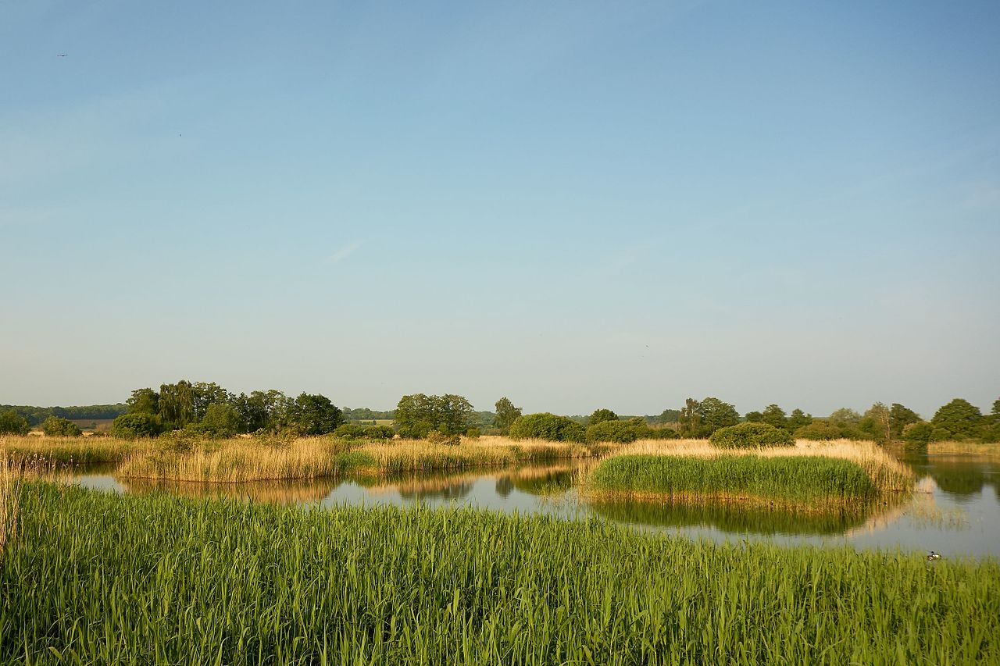

the free encyclopedia that anyone can edit.
 Wetland and National Nature Reserve located 4 kilometres (2.5 mi) west of Glastonbury on the Somerset Levels. It is managed by the Royal Society for the Protection of Birds, which helps coordinate conservation issues across the Somerset Levels as part of the Avalon Marshes Partnership. The reserve was constructed originally to provide reed bed habitat for the bittern, which in 1997 was at a low population level in the UK. The site is divided into sections with independently controllable water levels, and machinery and cattle are used to maintain the quality of the reed beds. The reserve hosts important breeding populations of the rare little bittern and great white egret, and has other uncommon animals and plants. Potential future threats may include heavy summer rains and extensive flooding. Sea level rise may make drainage more difficult, and current water pumping facilities may become inadequate. (Full article...) Recently featured: PaleoceneMillard FillmoreGottlob Berger ArchiveBy emailMore featured articles
Antoine Samuel Adam-Salomon (b. 1818) · Samuel Gridley Howe (d. 1876) · Brigitte Askonas (d. 2013) More anniversaries: January 8January 9January 10 ArchiveBy emailList of historical anniversaries/p>
 English wetland and National Nature Reserve located 4 kilometres (2.5 mi) west of Glastonbury on the Somerset Levels. It is managed by the Royal Society for the Protection of Birds, which helps coordinate
conservation issues across the Somerset Levels as part of the Avalon Marshes Partnership. The reserve was constructed originally to provide reed bed habitat for the bittern, which in 1997 was at a low population level in the UK. The
site is divided into sections with independently controllable water levels, and machinery and cattle are used to maintain the quality of the reed beds. The reserve hosts important breeding populations of the rare little bittern and
great white egret, and has other uncommon animals and plants. Potential future threats may include heavy summer rains and extensive flooding. Sea level rise may make drainage more difficult, and current water pumping facilities may
become inadequate. (Full article...) Recently featured: PaleoceneMillard FillmoreGottlob Berger ArchiveBy emailMore featured articles
English wetland and National Nature Reserve located 4 kilometres (2.5 mi) west of Glastonbury on the Somerset Levels. It is managed by the Royal Society for the Protection of Birds, which helps coordinate
conservation issues across the Somerset Levels as part of the Avalon Marshes Partnership. The reserve was constructed originally to provide reed bed habitat for the bittern, which in 1997 was at a low population level in the UK. The
site is divided into sections with independently controllable water levels, and machinery and cattle are used to maintain the quality of the reed beds. The reserve hosts important breeding populations of the rare little bittern and
great white egret, and has other uncommon animals and plants. Potential future threats may include heavy summer rains and extensive flooding. Sea level rise may make drainage more difficult, and current water pumping facilities may
become inadequate. (Full article...) Recently featured: PaleoceneMillard FillmoreGottlob Berger ArchiveBy emailMore featured articles
ArchiveStart a new articleNominate an article
Caleb Strong (January 9, 1745 – November 7, 1819) was an American lawyer and politician who twice served as Governor of Massachusetts, once from 1800 to 1807, and again from 1812 until 1816. He assisted in drafting the Constitution of Massachusetts in 1779, and served in the Massachusetts Senate and on the Massachusetts Governor's Council, before being elected to the inaugural United States Senate in 1789. The War of 1812 influenced Strong to come out of retirement and run again for governor. It was largely his policies during the war that aroused secessionist sentiment in Maine, when Massachusetts's pro-British merchants opposed the war and refused to defend Maine from British invaders. Engraving credit: James Bannister of the American Bank Note Company; restored by Andrew Shiva Recently featured: Stephen HawkingKifliDormition Cathedral, Moscow ArchiveMore